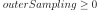

SobolSimulationResult¶
(Source code, png, hires.png, pdf)
{kind=link}
{kind=link}
- class SobolSimulationResult(*args)¶
Sobol simulation result.
Gathers the results of a
SobolSimulationAlgorithmalgorithm.- Parameters
- fo_dist
Distribution The random vector to study.
- to_dist
Distribution The function to study.
- outer_samplingint
The number of iterations.
- block_sizeint
The batch size.
- fo_dist
See also
Examples
>>> import openturns as ot >>> ot.RandomGenerator.SetSeed(0) >>> fo_dist = ot.Normal([0.154081,0.872087,0.0122877,0.0433801], [0.00982468,0.0302524,0.00911937,0.00926643], ot.CorrelationMatrix(4)) >>> to_dist = ot.Normal([0.16743,0.795477,0.0124454,0.045178], [0.0068919,0.00950876,0.00204324,0.0038844], ot.CorrelationMatrix(4)) >>> result = ot.SobolSimulationResult(fo_dist, to_dist, 250, 100) >>> fo = result.getFirstOrderIndicesEstimate() >>> to = result.getTotalOrderIndicesEstimate() >>> fo_dist = result.getFirstOrderIndicesDistribution() >>> to_dist = result.getTotalOrderIndicesDistribution() >>> graph = result.draw()
Methods
draw([confidenceLevel])Draw sensitivity indices.
Accessor to the block size.
Accessor to the object's name.
Accessor to the first order indices distribution.
Accessor to the first order indices estimate.
getId()Accessor to the object's id.
getName()Accessor to the object's name.
Accessor to the outer sampling.
Accessor to the object's shadowed id.
Accessor to the total order indices distribution.
Accessor to the total order indices estimate.
Accessor to the object's visibility state.
hasName()Test if the object is named.
Test if the object has a distinguishable name.
setBlockSize(blockSize)Accessor to the block size.
Accessor to the first order indices distribution.
setName(name)Accessor to the object's name.
setOuterSampling(outerSampling)Accessor to the outer sampling.
setShadowedId(id)Accessor to the object's shadowed id.
Accessor to the total order indices distribution.
setVisibility(visible)Accessor to the object's visibility state.
- __init__(*args)¶
- draw(confidenceLevel=0.95)¶
Draw sensitivity indices.
- Parameters
- confidence_levelfloat, default=0.95
Confidence level for intervals
- Returns
- graph
Graph A graph containing the aggregated first and total order indices.
- graph
- getBlockSize()¶
Accessor to the block size.
- Returns
- blockSizeint
Number of terms in the probability simulation estimator grouped together.
- getClassName()¶
Accessor to the object’s name.
- Returns
- class_namestr
The object class name (object.__class__.__name__).
- getFirstOrderIndicesDistribution()¶
Accessor to the first order indices distribution.
- Returns
- distribution
Distribution Distribution of the first order indices.
- distribution
- getFirstOrderIndicesEstimate()¶
Accessor to the first order indices estimate.
- Returns
- estimate
Point Estimate of the first order indices.
- estimate
- getId()¶
Accessor to the object’s id.
- Returns
- idint
Internal unique identifier.
- getName()¶
Accessor to the object’s name.
- Returns
- namestr
The name of the object.
- getOuterSampling()¶
Accessor to the outer sampling.
- Returns
- outerSamplingint
Number of groups of terms in the probability simulation estimator.
- getShadowedId()¶
Accessor to the object’s shadowed id.
- Returns
- idint
Internal unique identifier.
- getTotalOrderIndicesDistribution()¶
Accessor to the total order indices distribution.
- Returns
- distribution
Distribution Distribution of the total order indices.
- distribution
- getTotalOrderIndicesEstimate()¶
Accessor to the total order indices estimate.
- Returns
- estimate
Point Estimate of the total order indices.
- estimate
- getVisibility()¶
Accessor to the object’s visibility state.
- Returns
- visiblebool
Visibility flag.
- hasName()¶
Test if the object is named.
- Returns
- hasNamebool
True if the name is not empty.
- hasVisibleName()¶
Test if the object has a distinguishable name.
- Returns
- hasVisibleNamebool
True if the name is not empty and not the default one.
- setBlockSize(blockSize)¶
Accessor to the block size.
- Parameters
- blockSizeint,

Number of terms in the probability simulation estimator grouped together.
- blockSizeint,
- setFirstOrderIndicesDistribution(firstOrderIndicesDistribution)¶
Accessor to the first order indices distribution.
- Parameters
- distribution
Distribution Distribution of the first order indices.
- distribution
- setName(name)¶
Accessor to the object’s name.
- Parameters
- namestr
The name of the object.
- setOuterSampling(outerSampling)¶
Accessor to the outer sampling.
- Parameters
- outerSamplingint, 
Number of groups of terms in the probability simulation estimator.
- setShadowedId(id)¶
Accessor to the object’s shadowed id.
- Parameters
- idint
Internal unique identifier.
- setTotalOrderIndicesDistribution(totalOrderIndicesDistribution)¶
Accessor to the total order indices distribution.
- Parameters
- distribution
Distribution Distribution of the total order indices.
- distribution
- setVisibility(visible)¶
Accessor to the object’s visibility state.
- Parameters
- visiblebool
Visibility flag.